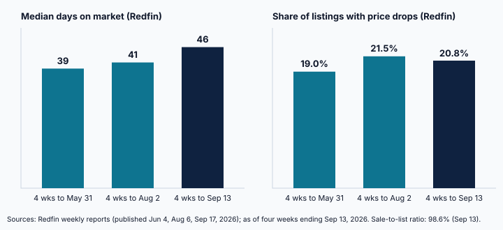

Homes Take 46 Days to Sell and Close at 98.6% of List Price
Redfin and Realtor.com data show longer selling times and rising seller concessions, widening the negotiating window for investors.
The U.S. housing market is moving more slowly than it did earlier this year. Redfin reported that the typical home sold during the four weeks ending September 13, 2026 spent a median of 46 days on the market, up from 39 days in the four weeks ending May 31 and 41 days in the four weeks ending August 2. The September figure was unchanged from a year earlier, but the direction since spring is clear.
Pricing power has shifted modestly toward buyers. The average sale-to-list price ratio was 98.6% in the latest Redfin period, down from 99% in the summer readings, meaning the average closed sale landed 1.4% below the asking price. Redfin also found that 25.1% of homes still sold above list price, so competition persists for realistically priced listings, while 20.8% of active listings carried a price cut. Realtor.com reached the same 20.8% reading for September, its highest September level since 2018, which makes the price-cut figure one of the better corroborated numbers this month.

Measured differently, Realtor.com put the national median at 61 days from listing to pending in September 2026, up one day from August and down one day from a year earlier. Its regional detail shows a split: days on market rose by 1 day in the Northeast and 2 days in the Midwest versus a year ago, while the South fell by 1 day and the West by 2 days. The two sources use different definitions, so the levels are not comparable, but both describe a market that is no longer clearing quickly.
Demand is part of the explanation. Redfin reported seasonally adjusted pending sales of 299,126 in the period ending September 13, down 5.4% from a year earlier and the lowest in nearly three years, with months of supply at 4.1. For investors and lenders, longer marketing periods can create room to negotiate price, credits, and closing timelines. They also lengthen carrying costs on bridge or short-term financing, which makes the timing assumptions behind a deal worth testing.
Redfin cautions that its national figures are subject to revision, and one four-week window should not be read as a trend by itself. The practical takeaway is narrower: with selling times lengthening and about one in five listings reducing price, underwriting should assume negotiation is available and that exit timelines may run longer than last spring.